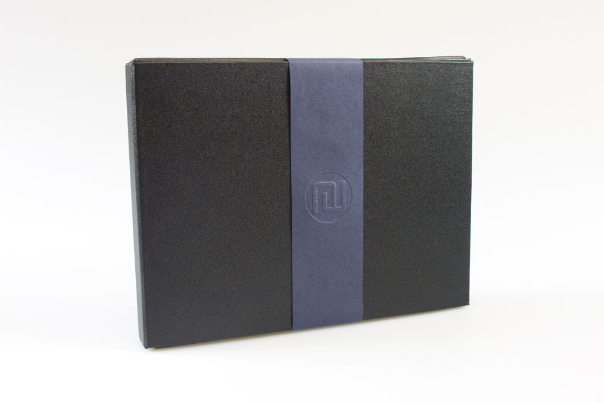

Nicholas Wolfaardt
Portfolio Design
I had to design and output a range of campaign items for a company, product or service of my choice. I was allowed to redesign a logo or use an existing one. The items being produced were predominantly for print, although I could have included one item for screen if I wished. ie: web site template, animation, movie etc. At least one of the printed items needed to be a non-2-dimensional promotional item ie: flip book, pop up, pop out, packaging etc. All other items were up to me to choose to best suit the needs of the company product or service that I had chosen. I had to use imagery, typography, colour and supporting design elements that would help convey the message throughout my campaign and appeal to my target audience. I had to present a "template style" mood board that represented the the style/theme to show the visual direction of my campaign. ie: colours, typefaces, supporting design elements, imagery and inspiration. This had to presented to the class before commencing production. During my presentation I had to give a "rational" as to why I think my style would appeal to the target audience. All content in the campaign had to be morally and ethically ecceptable.